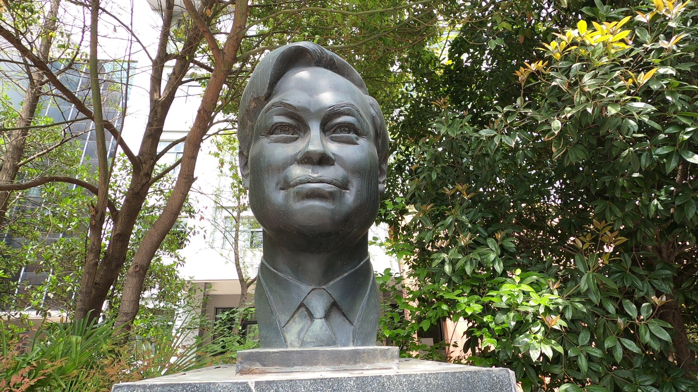
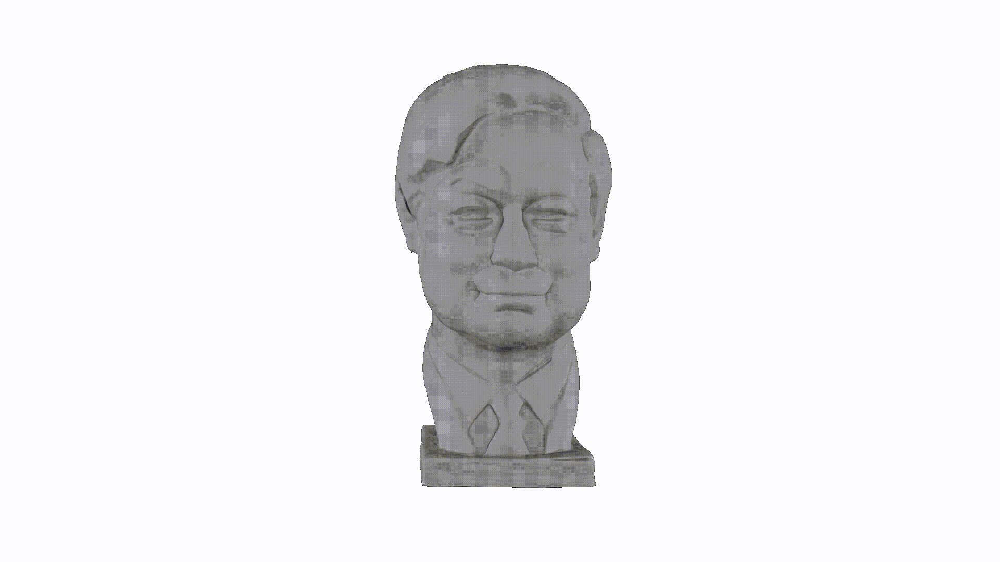
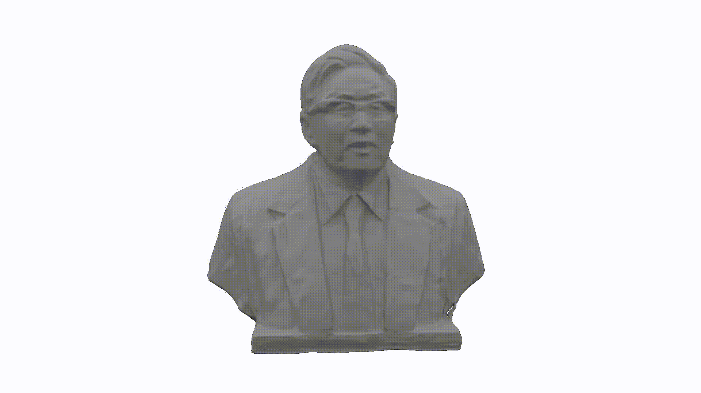

三维全息、高保真、数字化科大校园
在当前虚拟现实、增强现实、元宇宙等领域高速发展并在各行各业应用落地的时代，仅采用简单图形标注的地图、局限于个别角度的全景图像等呈现方式已无法满足大众对于如大学校园等景点、园区的沉浸式观赏与浏览。自2020年以来，受疫情等因素的影响导致校园封闭，校外人士已无法自由进出校园来参观如樱花大道等校园景色；另外，对于身处外地，但对科大校园有憧憬的学生或社会人士，受限于距离、时间等因素，无法到学校来参观与实际体验校园内的自然风光与校园生活。为解决上述痛点需求，中科大USTC-3DV课题组启动了“数字化科大校园”项目，拟对整个科大校园进行三维全息、高保真数字化，为科大的宣传、招生、已毕业校友重温校园时光、校外人士了解科大校园等贡献科技力量。
科大校园地图现状
截止到当前这篇文章落成之时，笔者翻阅了整个学校主页，仅找到了如下两张简略地图。虽然该地图清楚地展示科大校园的位置坐标与校区组成，但功能非常有限，与科大的名校地位远远不符。可以看出，该地图还仍然停留在缩略地图的颜色与标注，根本无法进一步浏览与如实观看科大校园内如少年班、老校门、郭沫若广场、樱花大道等老百姓所向往的科大标志性景点。在如今手机地图高速且便捷的时代，以上两张地图无法给人们呈现出手机地图所能呈现的更多内容，而大众更加渴望的是观赏五彩缤纷的真实科大校园景色。
而通过其他途径所获得的科大校园展示，更多可能也只停留在照片与视频的层面上，在某种程度上既丧失了校园景色的立体真实美感、也缺少了身临其境的交互体验，仍然停留在“看一眼”的层面上，十分缺乏吸引力与科技感。
再或者，对于前几年兴起的360度全景照片展示，也只能局限于固定尺度层面以及固定视角的效果展示，当浏览者想要拉近放大观看时就会出现模糊不清的问题，另一个致命的缺点是，若想查看不同尺度不同视角下的校园风景时，比如从俯瞰郭沫若广场到正面水平视角观赏，则需要切换不同的360度全景照片，增加了浏览者操作的不便性。
综合当下不同途径的科大校园景色展示的诸多弊端，足见，我们亟需一个符合科大名校地位的高大上（高保真、大规模、多尺度）科大校园数字化地图与三维模型，以便满足校内外人士对科大校园的浏览与体验需求。
数字化校园目标
基于上述实际应用需求，以及课题组将科研成果写到祖国大地的愿景，中科大USTC-3DV课题组启动了“数字化科大校园”项目，本项目拟达到以下目标：
- 目标一：对科大校园进行三维地图建模，以用于全景地貌、测量、导航等功能；
- 目标二：在任意地点对任意视角进行三维高保真全息渲染，其渲染真实性要达到高清相机所拍摄的图像效果。
我们以下图（今年谷歌对旧金山市几个街区所做的全息高保真数字化）为例来展示我们拟达到的效果，具体工作介绍见旧金山市的高保真数字化。课题组还会不断改进优化算法以达到更加优秀的效果，努力追求校园景色的高逼真、多尺度还原，给使用者更佳的浏览与观赏体验！
- 目标三：将科大校园内具有特殊意义的地方单独重建恢复出来，如少年班学院、老北门、科学大师雕像、孺子牛等标志性建筑或景观。
当前进展与工作安排
截止到目前，本项目已取得了部分进展：
- 利用无人机与GoPro，对科大校园已经采集了部分用于重建工作的数据：科大校园内雕像的多视角视频与图像、樱花大道的多尺度与多视角视频、郭沫若广场的多尺度与多视角视频。
对校内的部分雕像已经完成了三维几何重建与全息渲染工作。下面我们分别用不同的重建方式来展现我们已经初步完成的雕像重建结果：
  

 
对郭沫若广场进行了三维全息渲染，效果逼真，高度还原现实真实场景。下面的视频展示了根据我们对郭沫若广场的三维全息重建进行自由漫走的展示效果：
我们还对渲染的结果与真实拍摄图像进行对比，下图左侧为真实图片，右侧为渲染图片，可以看出由我们重建出来的模型可以得到高质量的渲染效果。
我们进一步给出动态的GIF对比图来说明我们三维全息渲染效果的优秀：

关于后续工作，课题组的安排如下：
- 对已经采集的雕像（如：郭沫若、严济慈、钱学森、华罗庚等雕像）进行高精度三维几何重建、高保真全息渲染；
- 在课题组购买所需的设备后，计划对科大校园进行多尺度、多视角、大规模的进行数据采集与处理工作，尤其针对少年班、老校门等标志性建筑进行重点采集；
- 由采集到的多视角图像、激光雷达所采集到的点云图像对校园进行三维重建，再结合课题组所研发的三维重建、神经渲染等技术进行三维全息重建与渲染等；
- 对标志性建筑、雕像等进行额外重建，并进行渲染。
项目建设详细内容说明
平台简介
本项目是基于科大校园物理环境，应用无人机\运动相机等拍摄采集设备，多角度采集真实校园整体环境，应用深度学习、计算机视觉等人工智能技术，完成科大校园的高保真全息建模，实现科大校园多维度、跨平台的虚拟展示和呈现，并为物理校园与虚拟校园的结合提供链接纽带，这将是智慧校园的重要基础组成部分。
并在此基础上，创建带有交互式地图、雷达、指南针、漫游路线、富媒体场景解说、数据可视化等开放集成功能，真实展示科大的校园风貌，为用户提供真实、感官、零距离的交互体验。
项目的建设完成，将获得一个拥有立体智能的感知环境、可视精准的校园管理、开放创新的网络科研、方便周到的校园生活平台——“智慧科大”，将会是科大校园信息化建设与创新的突破重点。
平台的核心组成包括三维高保真重建引擎、校园实景三维渲染引擎、校园数据可视化融合引擎、智慧科大全息实景应用、校园实景内容管理系统、校园实景应用开放服务组成。
三维高保真重建引擎
在项目中，应用深度学习、计算机视觉等AI先进技术，实现非标定相机等实景拍摄素材融合，融入深度学习技术，进行科大校园实景三维高保真重建和智能化处理。该引擎，支持将校园不同场景分解为多个单独训练，这种分解将渲染时间与场景大小分离，使渲染能够扩展到任意大的环境，并允许对校园实景进行逐块更新。该引擎的主要特性包括：
- 建模速度快：比传统建模节省80%以上时间，大幅降低人工成本；
- 需要素材少： 无需特定专业角度要求，只需拍摄素材覆盖场景，算法自动缝合重建；
- 完全还原真实场景：实景照片纹理贴图，真实还原实际场景；
- 实景模型，支持分区域逐块更新；
三维高保真渲染引擎
在项目中，应用神经网络深度学习等AI技术，实现科大校园三维实景的高保真渲染，为用户提供真实的实景体验。该模型主要特性包括：
- 高保真渲染：提供校园实景的高保真渲染，渲染效果与真实场景图基本无差；
- 跨平台渲染：支持PC、手机、大屏、微信小程序等各种形态终端；
- 轻量化渲染：模型数据处理优化，数据量小、效率高；
- 多级缓存机制：结合用户交互操作，实现模型数据分步动态加载，保证用户浏览体验；
- 开放集成：提供POI动态加载、POI标注、目标对象过滤筛选等开放接口服务，支持第三方应用集成；
智慧科大全息实景应用
智慧科大全息实景应用是智慧科大校园可视化的核心展示应用，通过微服务可基于位置直观的进行科大校园实景的可视化服务，形成科大校园一张图，校园的各类基础设施、机构单位、地标建筑、文化历史等信息，都可以在该应用中统一展示管理。该应用支持跨平台访问与智能交互（手机端\PC客户端\WEB端），并支持与其它应用系统的开放集成。应用中主要核心功能包括：
- 校园实景导览
在系统中，提供科大校园中重要楼宇（图书馆、郭沫若广场、少年班学院、展览馆、体育场、樱花大道等）的高保真全息虚拟漫游，支持720度旋转浏览查看，沉浸式虚拟现实浏览。
- 校园实景漫游
在应用中，支持用户按照应用中推荐路线自动漫游，系统中，根据科大人文特色，设置几条不同主题的行走路线，通过精心设计的漫游站点的设置来引导用户逐渐了解科大的校园风光与独特的人文风情。
例如，我们第一站可以从校史馆出发，先通过校史馆让用户了解科大的创校历史等；第二站达到孺子牛雕塑，代表了科大人的精神，然后到达少年班、天使路、郭沫若广场等。
- 校园微观细览
用户在校园实景漫游过程中，对一些特色地标（如：郭沫若、严济慈、钱学森、华罗庚等雕像）以及少年班、老校门、东区大门、郭沫若广场等民众感兴趣的重点场所，可点击查看高精度模型，同步观看解说内容，加深对科大校园、文化内涵的理解，提高用户的观看体验与满意度。
支持用户对该景观的精细化模型收藏及下载。
- 校园实景解说
在应用中，对科大校园内富有历史意义的楼宇建筑、雕像等对象，用户可通过图文、音视频等富媒体细腻，查看相关介绍，了解科大丰富的历史和文化内涵。
例如，当用户在虚拟校园里漫游，浏览至校园内雕像或一些科学家的相关建筑时，可自动展示宣扬该科学家精神的微电影、微视频、图片、文字专著等，缅怀科学前辈，弘扬科学精神，向广大师生和大众展现科学家精神思想内涵和时代价值。并支持用户收藏及解说内容下载。
- 校园定位及查询
提供校内主要建筑导航定位显示，包括行政办公、教学科研、校内场馆、学生宿舍等建筑，可实现建筑信息查询，提供校园建筑介绍、图片集、楼内机构详情等信息的展示及介绍。
- 校区场景切换及分层展示
在应用中，提供支持多个场景校区的切换，实现各校区场景之间的快速切换浏览。系统支持多种地图类型，包括gis地图、二维平面地图、三维实景漫游地图，用户可在任意地图类型之间进行无缝平滑切换。
- 校园路线导航
提供校园内部各楼宇建筑、机构部门的路线自动规划导航，校园内部导航区分驾车和步行两种导航模式。在手机移动端上，结合用户所处位置信息，提供导航路径指引。
- 校园综合查询
提供校园中各标志性楼宇、雕像、地标等实物的综合查询、分类筛选功能，用户输入关键词或者按照类别可以智能查询想要查看的地点，并快速导航定位到目标位置，包含历史记录、热门搜索功能。支持在科大实景地图中进行分层标注、查询、定位管理。
- 校园实景二维码分享
校园内任意位置、楼宇建筑和机构单位，均可生成位置二维码，用户手机扫描二维码即可进行校园实景分享。其它用户通过二维码扫码，即可进行定位访问。
- 校园活动地图
可对接校园活动信息，实时按日历显示校园活动包含讲座报告、会议、考试答辩、主题活动、电影演出、竞赛等，并可在应用中进行定位导航。
- 鹰眼地图
鹰眼地图可与场景大地图进行基于中心位置的准确联动，拖动鹰眼地图可在大地图进行快速导航定位，移动大地图鹰眼地图也随之位置移动。
- 个性化POI
为用户提供个性化POI标记功能。用户在POI热点标注位置中，可自定义上传图片、音视频信息。
支持用户个性化POI标记的分享展示功能。
- 地图工具
提供校园全景图像下载、地图标记、地图测距、纠错反馈等常用地图工具。
校园实景内容管理系统
校园实景内容管理系统，对整个科大三维全景应用进行数据维护管理的系统，可以进行权限管理，超级管理员有所有权限，并可分配权限。后台管理系统可以对信息数据进行维护，主要功能包括：
- 实景建模管理
提供科大校园实景模型建模及发布管理功能。
- POI标注管理
提供科大校园内，重点建筑物、单位、及其它校园地标信息的标注与修改。
- POI精细模型管理
提供科大校园内，重点特色景观的精细化模型发布管理功能。
- POI解说管理
系统提供，科大重点地标建筑的解说内容管理。支持各类富媒体信息上传，比如解说音视频、图片、实景历史等。
- 用户UGC内容管理
提供用户在智慧科大实景应用中，用户UGC上传的内容统一管理。
- 开放服务管理
提供其它第三方系统，与本平台的开放集成服务管理。
校园实景应用开放服务
平台提供符合行业标准的强大的SDK、API开放集成服务，确保第三方系统可以顺利接入科大校园实景应用，为将来的智慧校园应用建设预留开放性接口，实现互联互通。主要开放集成服务包括：
- 实景地图开放集成
第三方应用可以通过SDK集成、在线API集成等方式，在第三方系统中，方便地集成科大校园三维全景应用。
- POI信息集成服务
提供科大校园实景POI信息集成服务。核心接口服务包括POI信息查询、POI定位导航、POI自定义创建维护等功能。其中，在用户创建的POI中，支持图文、音视频、数据可视化组件等富媒体信息组件的展示集成。
- 用户访问集成服务
平台可对接校园门户系统，并支持与学校统一身份认证平台实现无缝对接。
项目亮点及关键技术
高效便捷、高逼真全景还原
由采集到的多视角图像、激光雷达所采集到的点云图像等信息素材，应用三维重建、神经渲染等技术进行三维全息重建与渲染等。支持观看用户在虚拟校园里面进行自由漫走，并使得所呈现出来的校园风景与实际观看风景的保真度一致，提高用户的观看满意度。
传统的3D建模，需要用户手工对客观物体建模，而多视角三维重建引擎，应用神经网络、神经学习等先进的AI算法技术，通过一组按要求拍摄的照片，即可重建三维模型，对实物建模的准确率高，并极大减低了工作量。
非凡视效、超大场景细节渲染
专业精度渲染，高逼真还原科大真实场景要素，超精密细节显示，实现要素对象的精确定位、数据指标的精准反映；高性能渲染，支持高级动态光照、信息化雾、辉光、灯光、白天/黄昏/夜晚、大气、雨雪等高逼真渲染特效，兼备炫酷的信息化风格，提供非凡视觉体验；无限视界，支持全尺度细节显示优化，从楼宇到雕像，超大场景全尺度还原、超大范围时空态势显示。
全要素对象、智能交互控制
全要素场景对象集成基于真实科大校园信息，支持全要素场景对象加载，包含矢量地理信息数据、建筑模型数据、城市设施、空间实体对象、数据图层、自定义对象等，构建多源信息融合科大校园全要素体系，完整、详尽的对科大校园态势进行全方位复现。
校园实景应用中提供主题切换、目标对象筛选、对象搜索、镜头控制、目标锁定（定位、轨迹跟踪）等丰富的交互查询手段，辅助用户对科大特定领域运行态势进行监测和分析。
跨终端协同、优化用户体验
平台支持用户通过手机/PC等多屏终端访问，无需用户安装任何插件的情况下直接观看虚拟科大校园，并通过键盘与鼠标操作，即可在校园里面漫走。
另外，平台应用通过云服务、端侧计算融合的方式，实现校园实景“云端融合渲染”，优化用户交互，保障用户在虚拟校园里面漫游时的流畅性。
多源数据融合、智慧科大集成
平台以数字孪生为理念，采用开放服务模式，应用SDK、API等多种集成方式，支持各类多源数据的开放集成，通过与校园运营管理等多方系统集成，联合构建校园运营蓝图，跨部门整合学校各类资源信息，实现校园全息可视、综合调度、应急指挥等可视、可管、可控的运营模式，解决校园传统管理中，存在的“资源管理割裂、数据信息不透明、运营能力薄弱、管理模式陈旧”等难题，实现物理校园与信息校园的融合，推动校园治理的创新突破发展。
项目经济效益与可行性分析
效益分析
- 推动科大宣传、提升科大影响力
通过对科大校园进行三维地图建模，实现整个校园园区的全景地貌、测量、导航等功能，方便一些对科大抱有憧憬的同学和毕业或不在校的校友等远程进行参观，感受科大红专并进、理实交融的校风校貌，为校园招生工作提供强力有的宣传工具。
同时，校园实景导航大大方便师生们尤其是新生在校园内的出行。
- 物理世界与历史融合、传承科大文化
高保真数字化校园应用项目，借助新技术手段，通过三维实景重建，融入科大文化历史与发展动态等信息，实现物理世界变迁，与科大发展动态的融合，既满足当下对科大文化传播的需求，又能满足未来信息时代大爆炸下，对信息数据与客观物理世界的融合呈现，把学校宝贵的文化资产保存下来、传承下去。
- 数字孪生融合、创新校园治理模式
作为数字化校园重要组成部分的三虚拟维校园实景模型也已成为校园信息化建设的重要组成部分。三维实景可视化的模式让校园管理更加便捷,直观,相较于传统的基于二维平面地图和影像地图的虚拟校园,其更能满足学校对外宣传,校园导航,校园规划和信息化管理的多元化要求。
本项目的建设，致力于打造科大的三维可视化基座平台，通过与校园运营管理等多方系统集成，联合构建校园运营蓝图，跨部门整合学校各类资源信息，实现校园全息可视、综合调度、应急指挥等可视、可管、可控的运营模式，解决校园传统管理中，存在的“资源管理割裂、数据信息不透明、运营能力薄弱、管理模式陈旧”等难题，创新校园治理新模式。
项目建设可行性
- 技术可行性
人工智能技术发展至今，特别是神经辐射场技术（NERF）在大规模场景实景重建的应用取得了关键性的突破，使得在项目中，无需专业的拍摄和建模人员，即可完成校园实景高保真数字化的实现，既可以为用户提供真实的校园实景体验，也大大减少了传统建模所需的人工成本。
- 管理可行性
信息化的业务管理在如今的信息时代是大势所趋，而且随着现代管理理念、方法和途径的发展，实景可视化应用手段日渐成熟，也必定会突飞猛进，并且目前教师、学生对电脑等操作也较为熟悉，校园实景内容管理系统，无需太复杂的专业操作，对平台的内容管理维护人员（实景采集人员、POI编辑人员等）等来说降低了其工作量，各方对该项目的开发与实施会大力支持。
- 经济可行性
平台可取代原来由专业采编建模人员人员进行校园实景拍摄及建模工作，并且通过利用AI技术降低了实景模型优化的时间成本，统一存储、管理，减少了大量的线下所产生的不必要投资，整体上减少开支节省资金，切实提高了学校工作效率，具有极强的经济可行性。
- 营运可行性
本项目开发的应用系统，操作简单，易于理解，只需通过简单熟悉，上手较快，学校的记者团队以及相关管理人员均能进行操作，营运环境要求相对较低。
所需资源
为完成上述目标，课题组还需购买相应的采集设备与计算设备，以及在数据采集、数据标注等方面的协助，具体包括：
- 用于采集多视角图像数据的各类型设备：运动型相机、多种型号的无人机、车载相机等；
- 用于采集场景几何数据的设备：激光雷达；
- 用于重建与渲染的计算设备：高性能服务器、高配置显卡电脑，GPU资源等；
- 聘请一定数量的志愿者或者标注人员通过各种采集设备来对校园内的各个地方进行采集，并对采集的数据进行清洗与标注。